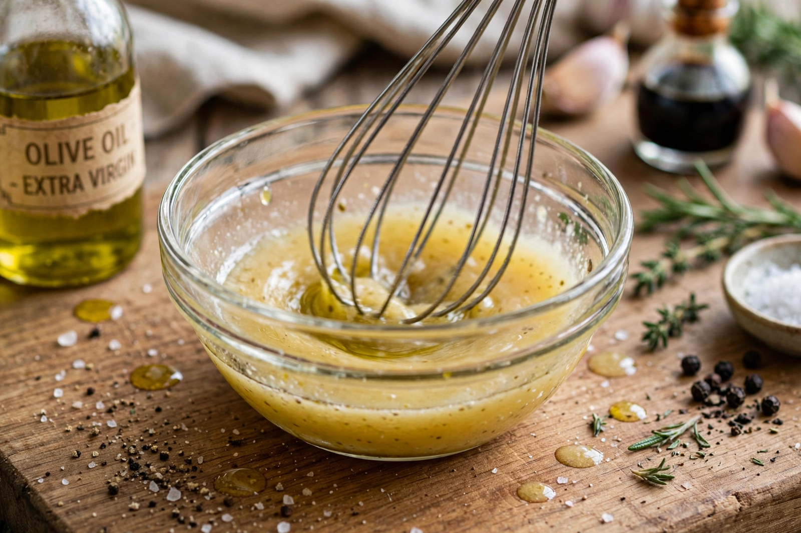

| Vinaigrette | |
|---|---|
 Whisking a vinaigrette | |
| Type | Salad dressing, sauce, marinade |
| Place of origin | France |
| Main ingredients | Oil, vinegar (typically 3:1 ratio) |
| Variations | Mustard, herbs, shallot, citrus, honey |
Vinaigrette (French pronunciation: [vinɛɡʁɛt]) is a sauce made by mixing an oil with a mild acid such as vinegar or lemon juice. The mixture can be enhanced with salt, herbs and/or spices. It is used most commonly as a salad dressing, but also as a marinade or light sauce. Traditionally, a vinaigrette consists of 3 parts oil and 1 part vinegar whisked into an emulsion, though the term is also applied to mixtures with different proportions and to permanent emulsions stabilized with mustard or egg.
A basic vinaigrette combines oil—commonly olive oil, though other vegetable oils are used—with wine vinegar, lemon juice, or another acid. The acid is seasoned with salt and pepper first, then the oil is whisked in gradually to form a temporary emulsion that readily separates on standing. Dijon mustard is a frequent addition: its mucilage acts as an emulsifier and its flavour bridges oil and vinegar. Finely minced shallot, garlic, fresh herbs, and a pinch of sugar or honey for balance are common variations.
Named vinaigrettes include lemon vinaigrette, balsamic vinaigrette (made with reduced balsamic vinegar), raspberry vinaigrette, and champagne vinaigrette. In Russian and Central European cooking, "vinaigrette" (vinegret) also names a salad of diced cooked vegetables—beetroot, potato, carrot, and pickles—dressed with oil and vinegar, a usage derived from the French dressing rather than the sauce alone.
Beyond green salads, vinaigrettes dress grain and bean salads, cooked vegetables such as green beans and leeks (leeks vinaigrette is a French bistro classic), and cold meats and seafood. As a marinade, the acid in vinaigrette both flavours and lightly tenderizes proteins, though prolonged exposure can toughen or "cook" delicate fish, as in ceviche-style applications.
Salad dressing · Emulsion · Vinegar · Chow-chow · Apicius